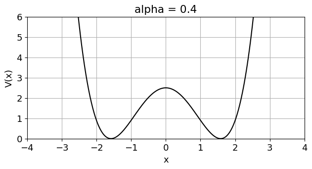
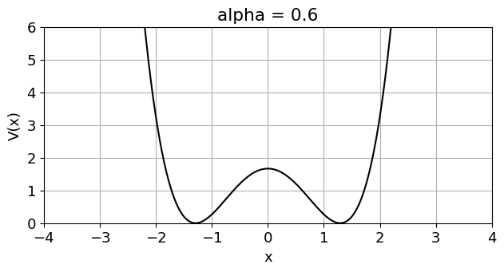
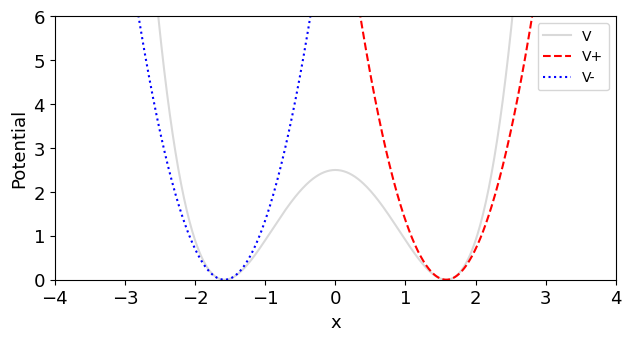
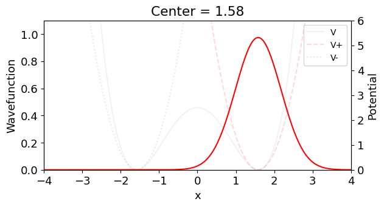
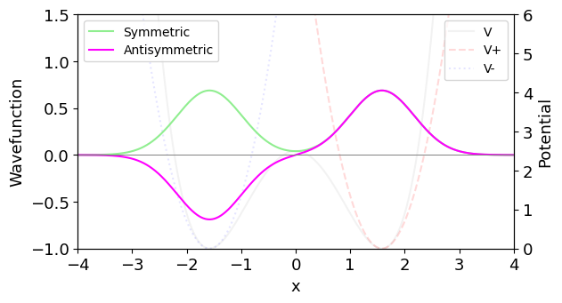
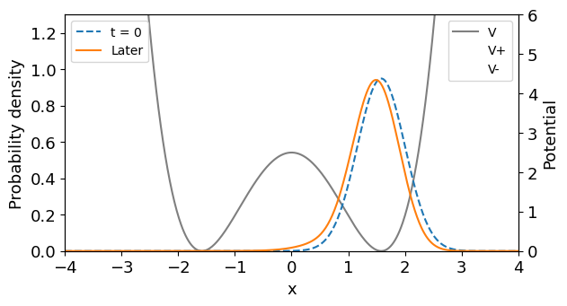
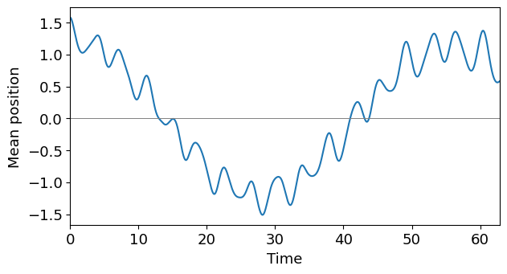
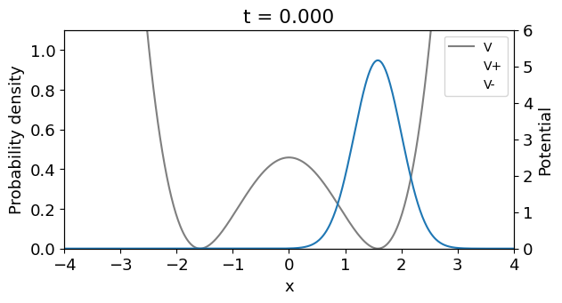
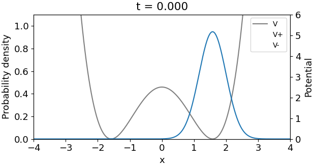

Lab 09: Assignment 2 Tutorial#
In Assignment 1, we followed a wave packet in a harmonic well. Now put it in the right-hand well of a double-well potential.
import numpy as np
import matplotlib.pyplot as plt
from numba import njit
# if you're curious, this is to change default formatting
# make plots look good in the slideshow format.
plt.rcParams.update({"font.size": 13,
"figure.figsize": (6.2, 3.3), "figure.dpi": 100,
"figure.constrained_layout.use": True})
We’ll follow the probability density as the packet moves between the wells.
Put the wavefunction on a grid#
We will store one complex amplitude at each position. Use \(m=\hbar=1\) and 600 intervals on \([-4,4]\).
# coding culture: we tend to use capital letters when want to define
# immutable constants that will be used throughout a whole script.
ALPHA = 0.4
HBAR = 1
BOXSIZE = 8
ND = 600
DELTAX = BOXSIZE / ND
XMIN = 1 / np.sqrt(ALPHA)
x = np.linspace(-BOXSIZE / 2, BOXSIZE / 2, ND + 1)
print("Positions:", x.size, "Spacing:", DELTAX)
Positions: 601 Spacing: 0.013333333333333334
There are 601 positions and 600 intervals. The spacing \(\Delta x\) will weight our spatial sums.
Two wells and a barrier#
We’ll use \(\alpha=0.4\) here. Use your assigned value in the homework.
# and then we use lowercase for more generic variables.
@njit
def V(x, alpha):
return alpha * x**4 - 2 * x**2 + 1 / alpha
alpha_view = ALPHA
fig, ax = plt.subplots()
ax.plot(x, V(x, alpha_view), color="black")
ax.set(xlabel="x", ylabel="V(x)",
xlim=(-4, 4), ylim=(0, 6),
title=f"alpha = {alpha_view}")
ax.grid(True)
plt.show()

What happens when we set alpha to .6?
After changing alpha#
alpha_view = .6 # <==========================================
fig, ax = plt.subplots()
ax.plot(x, V(x, alpha_view), color="black")
ax.set(xlabel="x", ylabel="V(x)",
xlim=(-4, 4), ylim=(0, 6),
title=f"alpha = {alpha_view}")
ax.grid(True)
plt.show()

This preview uses \(\alpha=0.6\). ALPHA is still 0.4.
Near each minimum#
Expand around either minimum through second order. Since \(V=V^{\prime}=0\) and \(V^{\prime\prime}=8\) there, the potential is locally quadratic:
with \(x_{\min}=1/\sqrt{\alpha}\)
alpha_view = ALPHA # let's not forget to turn this back to our universal CONSTANT
@njit
def V_plus(x, alpha):
return 4 * (x - 1 / np.sqrt(alpha))**2
@njit
def V_minus(x, alpha):
return 4 * (x + 1 / np.sqrt(alpha))**2
def plot_potentials(ax, v_color, posv_color, negv_color):
ax.plot(x, V(x, ALPHA), color=v_color)
ax.plot(x, V_plus(x, ALPHA), "--", color=posv_color)
ax.plot(x, V_minus(x, ALPHA), ":", color=negv_color)
ax.set(ylabel="Potential", ylim=(0, 6),
zorder=0)
ax.legend(["V", "V+", "V-"],
loc="upper right", fontsize=10)
x_window = (-4, 4)
fig, ax = plt.subplots()
plot_potentials(ax, v_color = ('black', 0.15), posv_color='red', negv_color='blue') # can you guess how to colors work here?
ax.set(xlabel="x", xlim=x_window)
plt.show()

We’ll use these local harmonic wells to choose the initial state.
The initial wavefunction#
We’re approximating both wells locally as harmonic, so we might as well approximate the state as a ground state oscillator, with \(\omega=2\sqrt{2}\) from \(\tfrac12\omega^2=4\):
which remember is just a gaussian.
OMEGA = np.sqrt(8)
@njit
def func_psi_0(x, x_start):
return (OMEGA / np.pi)**0.25 * np.exp(
-OMEGA * (x - x_start)**2 / (2 * HBAR))
psi_0 = func_psi_0(x, XMIN)
center = XMIN
fig, ax = plt.subplots()
ax.plot(x, func_psi_0(x, center), color='red')
ax.set(xlabel="x", ylabel="Wavefunction",
zorder=1, xlim=(-4, 4), ylim=(0, 1.1),
title=f"Center = {center:.2f}")
ax.patch.set_visible(False)
plot_potentials(ax.twinx(), v_color = ('black', .05), posv_color=('red', .15), negv_color=('blue', .1))
plt.show()

The Gaussian starts in the right well, centered at \(x_c=x_{\min}\).
Even and odd combinations#
The full potential has even and odd energy eigenstates (state functions). We can write our right-well Gaussian as a sum of even and odd combinations. This gives us a useful way to understand its motion between the wells.
Even/odd function refresher#
Reflecting \(x\) swaps the two local Gaussians: \(\psi_+(-x)=\psi_-(x)\) and \(\psi_-(-x)=\psi_+(x)\). Therefore
The even combination stays the same; the odd combination changes sign.
psi_plus = func_psi_0(x, XMIN)
psi_minus = func_psi_0(x, -XMIN)
psi_S = (psi_plus + psi_minus) / np.sqrt(2)
psi_A = (psi_plus - psi_minus) / np.sqrt(2)
fig, ax = plt.subplots()
ax.plot(x, psi_S, label="Symmetric", color='lightgreen')
ax.plot(x, psi_A, label="Antisymmetric", color='magenta')
ax.axhline(0, color="gray", linewidth=0.7)
ax.set(xlabel="x", ylabel="Wavefunction",
zorder=1, xlim=(-4, 4), ylim=(-1, 1.5))
ax.legend(loc="upper left", fontsize=10)
ax.patch.set_visible(False)
plot_potentials(ax.twinx(), v_color = ('black', .05), posv_color=('red', .15), negv_color=('blue', .1))
plt.show()

So we’ve split the right-well Gaussian into pieces whose phases evolve at different rates. Our combinations approximate the lowest even and odd energy eigenstates, \(\phi_{\mathrm S}\) and \(\phi_{\mathrm A}\). Keeping these two states gives
The coefficients come from the initial Gaussian. Both spatial functions can be real; the time factors supply the complex phase. As their relative phase changes, interference moves probability between the wells.
Advance the amplitudes#
Now evolve the Gaussian using the full double-well potential. As in Assignment 1, the short-time propagator carries amplitude from \(x_a\) to \(x_b\):
@njit
def func_K(x_a, x_b, dt, alpha):
kinetic = 0.5 * (x_b - x_a)**2 / dt
potential = V((x_a + x_b) / 2, alpha) * dt
return np.exp(1j * (kinetic - potential))
Next, apply this propagator to every pair of positions on our grid.
From the propagator to the next state#
Add the complex amplitudes from every starting position. On the grid, the integral becomes a weighted sum:
Build the matrix#
Each column starts at one position; each row arrives at one position. Use the assignment’s \(\Delta t=\pi/128\) for the evolution.
Compile the loops with @njit, as in Lab 08. The first call includes compilation.
@njit
def build_kernel(x, dt, alpha):
kernel = np.zeros((x.size, x.size),
dtype=np.complex64)
for i in range(x.size):
for j in range(x.size):
kernel[i, j] = func_K(
x[j], x[i], dt, alpha)
return kernel.astype(np.complex128)
DELTAT = np.pi / 128
K_dt = build_kernel(x, DELTAT, ALPHA)
print("Kernel shape:", K_dt.shape)
Kernel shape: (601, 601)
The matrix and state use complex128 for Numba’s matrix multiplication.
Take a step and inspect it#
The grid sum is a matrix–vector product. Normalize because our kernel omits the scalar prefactor.
@njit
def step(state, kernel, dx):
updated = dx * (kernel @ state)
norm = dx * np.sum(np.abs(updated)**2)
return updated / np.sqrt(norm)
@njit
def evolve(state, kernel, dx, nt):
psi = np.empty((nt + 1, state.size),
dtype=np.complex128)
psi[0] = state
for n in range(nt):
psi[n + 1] = step(psi[n], kernel, dx)
return psi
steps_view = 20
psi_view = evolve(psi_0.astype(np.complex128),
K_dt, DELTAX, steps_view)[-1]
fig, ax = plt.subplots()
ax.plot(x, np.abs(psi_0)**2, "--", label="t = 0")
ax.plot(x, np.abs(psi_view)**2, label="Later")
ax.set(xlabel="x", ylabel="Probability density",
zorder=1, xlim=(-4, 4), ylim=(0, 1.3))
ax.legend(loc="upper left", fontsize=10)
ax.patch.set_visible(False)
plot_potentials(ax.twinx(), v_color = ('black', .5), posv_color=('red', 0), negv_color=('blue', 0))
plt.show()

Try steps_view = 100 to follow the packet for a little longer.
Numba compiles the whole loop in evolve. Each step uses the state from the previous step.
Follow the motion#
Run to \(T=20\pi\). The mean is the probability-weighted average of position:
T0 = 20 * np.pi
NT = int(T0 / DELTAT)
t = np.arange(NT + 1) * DELTAT
psi = evolve(psi_0.astype(np.complex128),
K_dt, DELTAX, NT)
prob = np.abs(psi)**2
x_bar = DELTAX * (prob @ x)
fig, ax = plt.subplots()
ax.plot(t, x_bar)
ax.axhline(0, color="gray", linewidth=0.7)
ax.set(xlabel="Time", ylabel="Mean position",
xlim=(0, t[-1]))
plt.show()

Choose a time near the first broad minimum. We’ll inspect the density at that time.
Check what the mean is telling us#
time_view = 0
n = np.argmin(np.abs(t - time_view))
fig, ax = plt.subplots()
ax.plot(x, prob[n])
ax.set(xlabel="x", ylabel="Probability density",
zorder=1, xlim=(-4, 4),
ylim=(0, 1.1 * prob.max()),
title=f"t = {t[n]:.3f}")
ax.patch.set_visible(False)
plot_potentials(ax.twinx(), v_color = ('black', .5), posv_color=('red', 0), negv_color=('blue', 0))
plt.show()

Set time_view to the time you chose from the mean-position plot.
from matplotlib.animation import FuncAnimation, PillowWriter
from IPython.display import Image, display
fps = 25
frames = np.unique(np.linspace(0, len(t) - 1, 240, dtype=int))
fig, ax = plt.subplots()
line, = ax.plot(x, prob[0])
ax.set(xlabel="x", ylabel="Probability density",
zorder=1, xlim=(-4, 4),
ylim=(0, 1.1 * prob.max()))
title = ax.set_title(f"t = {t[0]:.3f}")
ax.patch.set_visible(False)
plot_potentials(
ax.twinx(),
v_color=('black', .5),
posv_color=('red', 0),
negv_color=('blue', 0)
)
def update(n):
line.set_ydata(prob[n])
title.set_text(f"t = {t[n]:.3f}")
return line, title
ani = FuncAnimation(
fig, update, frames=frames,
interval=1000 / fps, blit=False, repeat=True
)
gif_path = "density_evolution.gif"
ani.save(gif_path, writer=PillowWriter(fps=fps), dpi=100)
plt.close(fig)
display(Image(filename=gif_path))

Back to Assignment 2#
Give the time and mean position at the first major minimum. Use the density at that time to explain whether most of the probability has reached the left well.
For your assigned \(\alpha\), check that the run is long enough to see the transfer and return.
Assignment 2 is due Monday, November 2.
Run cells in order. Shift+Enter selects the next cell on the same slide, leaving the result visible. Click the code cell to edit and run it again; Ctrl+Enter runs without changing the selected cell. After changing ALPHA, rerun from the setup onward. The preview controls redraw their own plots; use ALPHA in the setup to change the evolution.